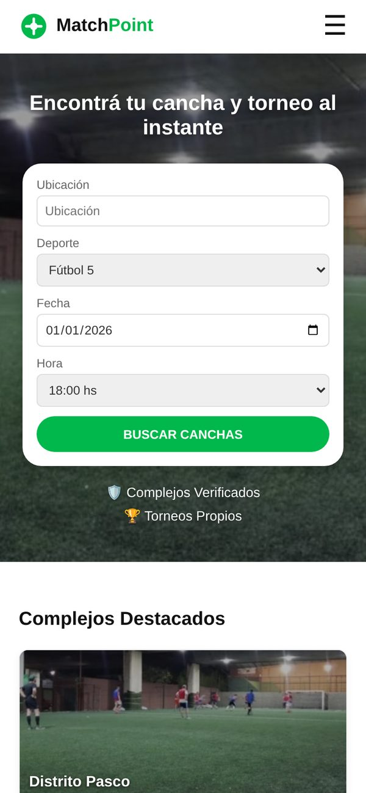
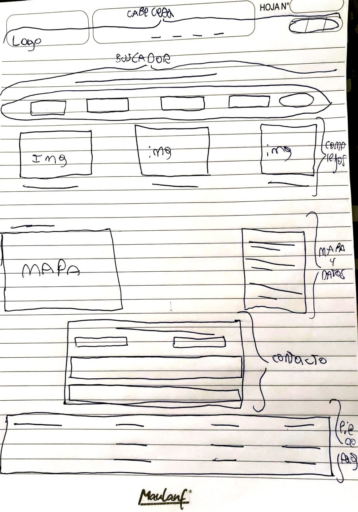
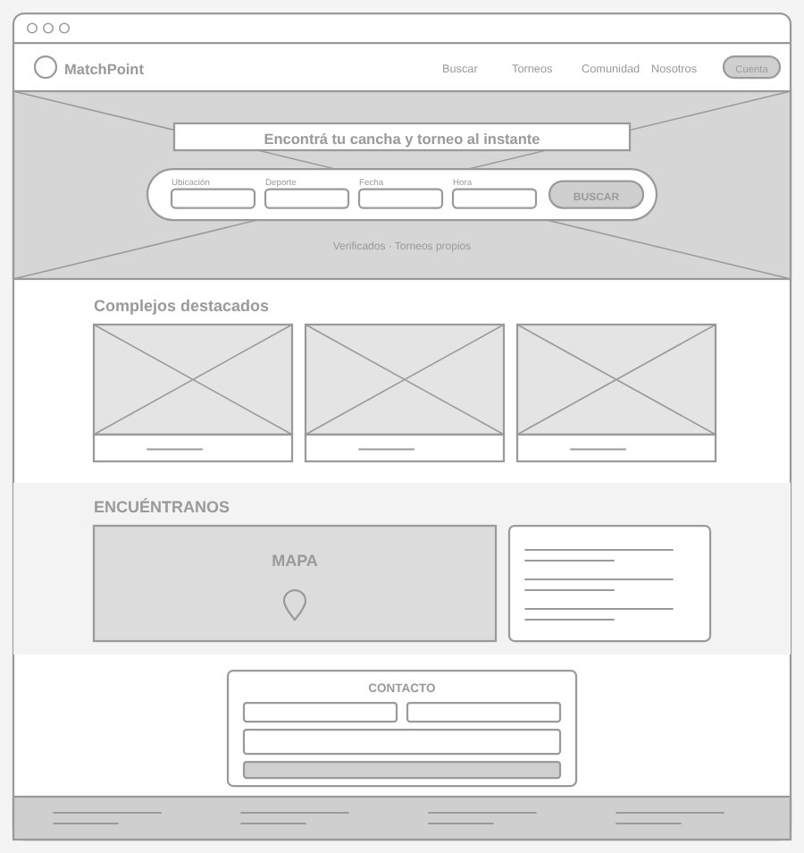
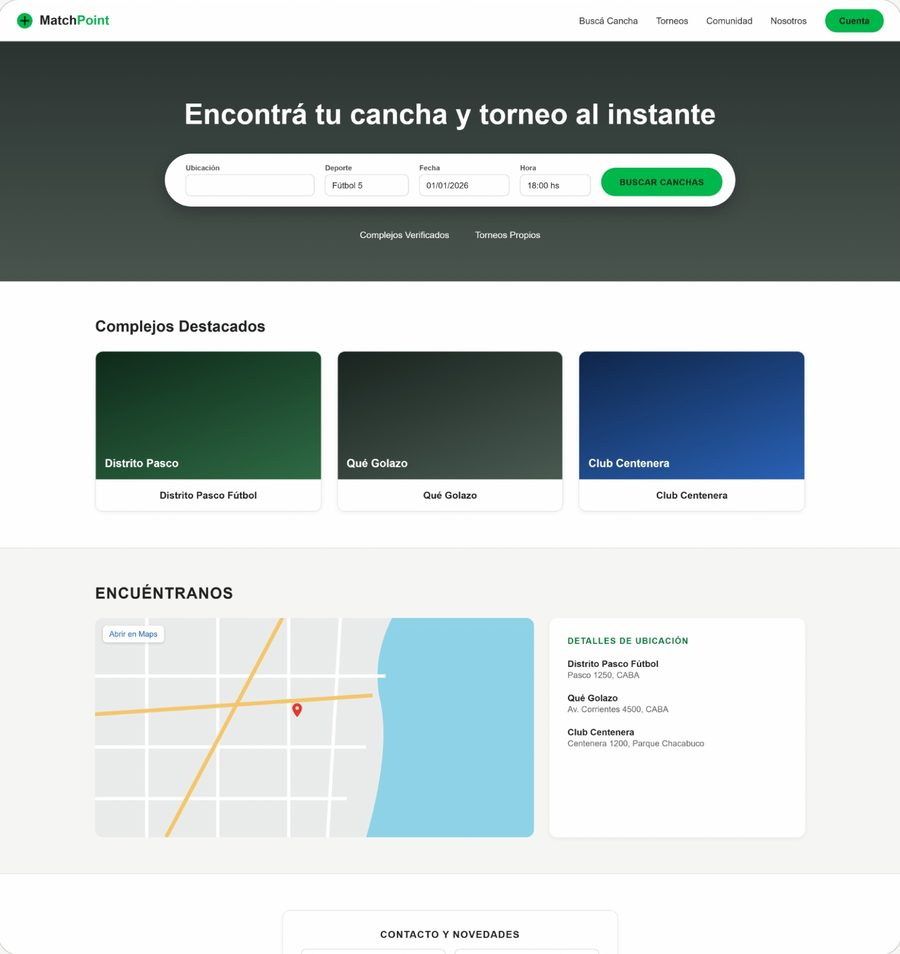

Contenidos y Creatividad I, 2026
MatchPoint
Una página web para encontrar canchas de fútbol 5, fútbol 7 y pádel, y anotarse en torneos amateur en complejos reales de la Ciudad de Buenos Aires.
Abrir el sitio
El problema
Organizar un partido en Buenos Aires es un lío: la información está repartida en redes y llamados, nunca sabés si el horario está libre de verdad y no hay un solo lugar con todos los complejos y torneos.
Lo que hice
Diseñé y programé en HTML y CSS un sitio de seis secciones: inicio con buscador, buscar cancha, torneos, comunidad, nosotros y cuenta. Analicé a la competencia (ATC Sports) para encontrar qué mejorar.
Cómo se adapta
El sitio funciona en seis resoluciones, de pantallas grandes a celulares chicos, con un menú hamburguesa hecho solo con CSS.
Del boceto al sitio
-

Wireframe a mano. Dónde va cada parte de la página.
-

Wireframe digital. La estructura ordenada, sin color.
-

Alta fidelidad. Colores, tipografía y contenido final.
Color 60/30/10
El verde aparece solo en lo importante: botones, logo y bordes. Así la página se ve limpia y se lee bien en cualquier pantalla.